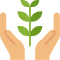

Awareness

We believe that experiencing the treasures of our planet is the best way to foster awareness and passion.
Our youth get support to travel, explore and actively participate in sustainable ocean adventures.
Education
Our programs introduce green careers and new topics in sustainability to our youth participants.
They get opportunities to learn about different jobs and requirements and how best give back to the community.
Leadership

Through our programs, our participants are given a path to becoming leaders and learn the skills to make things happen.
They are encouraged to give back and become leaders of projects for their own communities to a more sustainable future.
Vision

We emphasize the importance of having goals and planning towards them.
With guidance, our youth are able to aspire what a better world for themselves and their communities would look like.
Individuality
Our youth learn to value differences and become more independent.
They are able to learn about the things that are important to them and by giving them a platform, we help to develop our participants.
Connect

Our programs connect industry and government leaders
to our youth participants.
We help match our participants personal interests
and skills with their college and career goals.
Our network
We develop educational tools, trainings and initiatives to prepare
young and emerging leaders to build a more sustainable world. The Institute's book and educational curriculum,
Stone Soup for the World: Life-Changing Stories of Everyday Heroes inspire, educate, and empower. Founded on Martha's Vineyard
in 1997, the Institute is a 501c3 non-profit organization.
Stone Soup Leadership Institute 2018 Ⓒ